Subnautica Leviathans:
Sea Treader LeviathanSubnautica Below Zero Leviathans:
Glow Whale Leviathan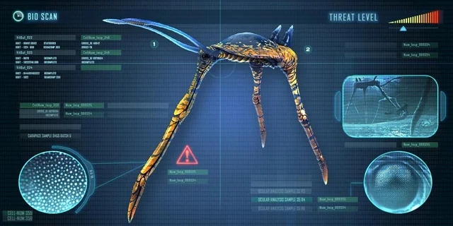
Sea Treader Leviathan:
The Sea Treader Leviathan is a passive leviathan class creature. It can be found in small herds on the seafloor, primarily in the Sea Treader's Path but also in the Grand Reef. It is the smallest leviathan in Subnautica.
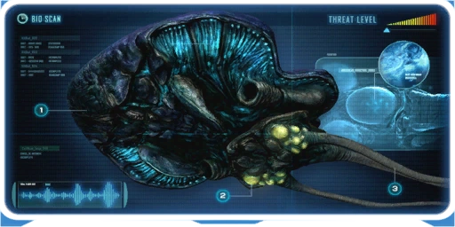
Reefback Leviathan:
The Reefback is massive in size, with most of the creature's body being comprised of a thick, dark-blue carapace with a rounded, triangular front, and a relatively small body concentrated in the posterior. Attached to its main body are three long whip-like tentacles.
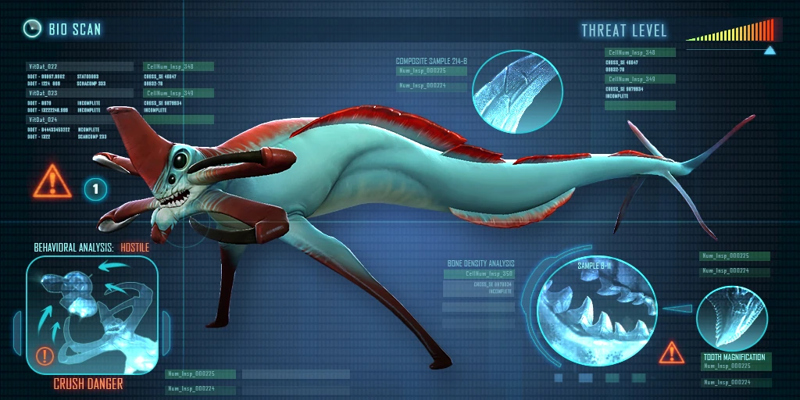
Reaper Leviathan:
The Reaper Leviathan is an aggressive leviathan class fauna species usually found swimming in large open areas, such as the Crash Zone, Dunes, and Mountains. It is the third-largest aggressive creature in the game and fifth largest overall.
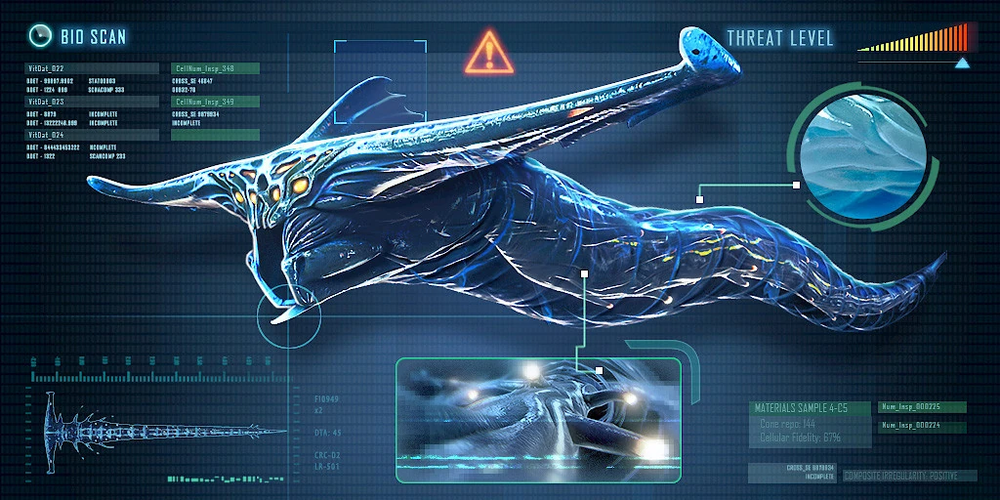
Ghost Leviathan:
The Ghost Leviathans' life cycle begins in the Lost River as juveniles, they consume the Ghostrays and River Prowlers and potentially other juveniles. As the leviathans mature and become too large for their home, they migrate to the open, surface world biomes.
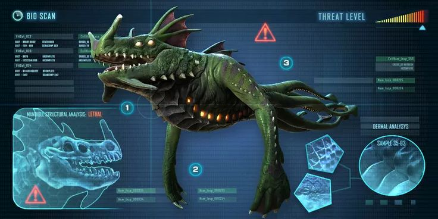
Sea Dragon Leviathan:
The Sea Dragon Leviathan's body mostly resembles the Sea Emperor Leviathan, albeit much smaller and slimmer in design. The body is mostly dark green in color, along with purple accents on its webbed limbs and head. It has protective plates on the underside of its body that start at the neck and run down to where the tentacles begin.
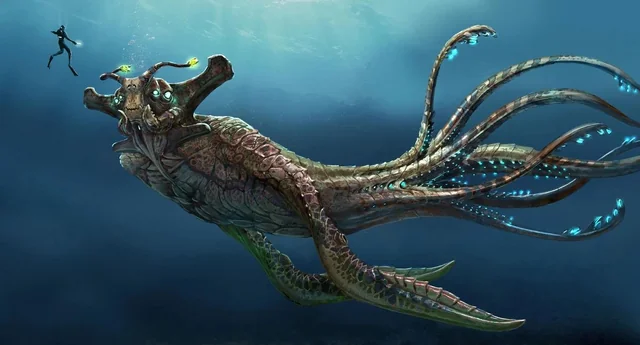
Sea Emperor Leviathan:
The Sea Emperor Leviathan is the largest known living Leviathan class fauna found within the crater in Subnautica. It is sapient and telepathic, but unlike most Leviathans, it is not aggressive.
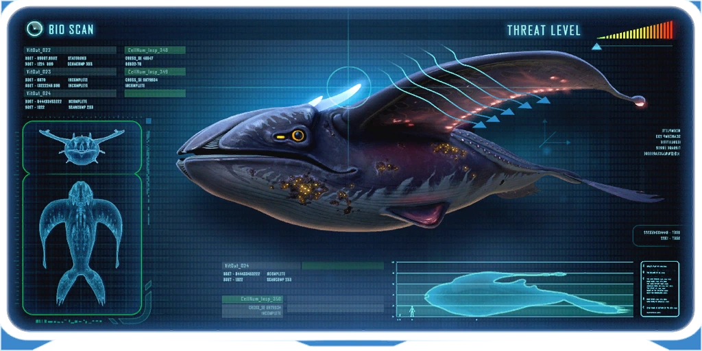
Glow Whale Leviathan:
The Glow Whale is huge and whale-like in form, with the body ending in a fluked tail. Its eyes have yellow irises and large black pupils. Each eye has a pill-shaped photophore directly in front of it. Atop the head a pair of translucent blue "horns" can be seen.
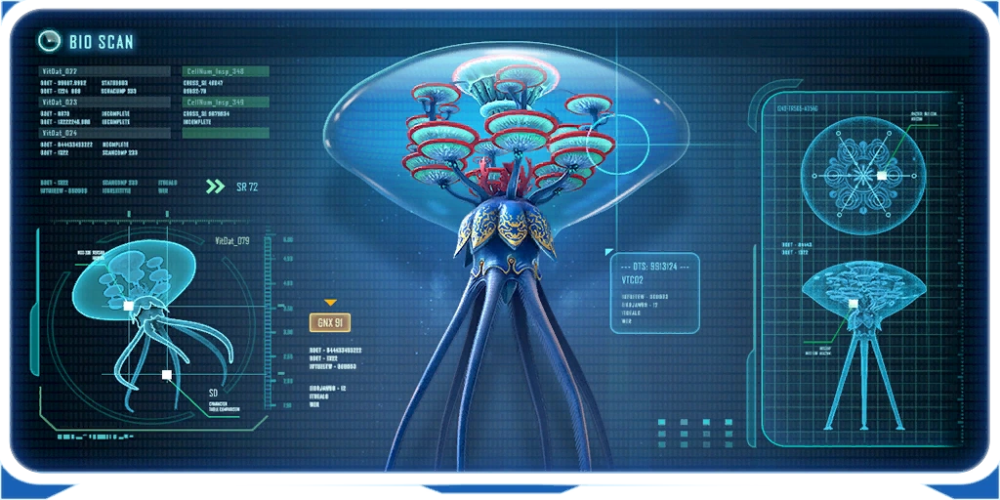
Vent garden Leviathan:
The Vent Garden's main body is round and has a petal-like set of blue and yellow patterned frills on top of it. The bottom of the body seems to have an opening that is sealed shut by a cone-shaped set of flaps when swimming and opens when the organism is above a Hydrothermal Vent.
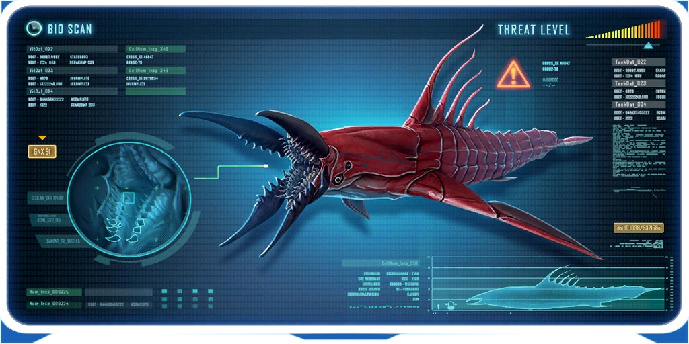
Chelicerate Leviathan:
The top side of the body is red in color whilst the underside is beige. The head is quite large, accounting for around one third of the total body length including mandibles.
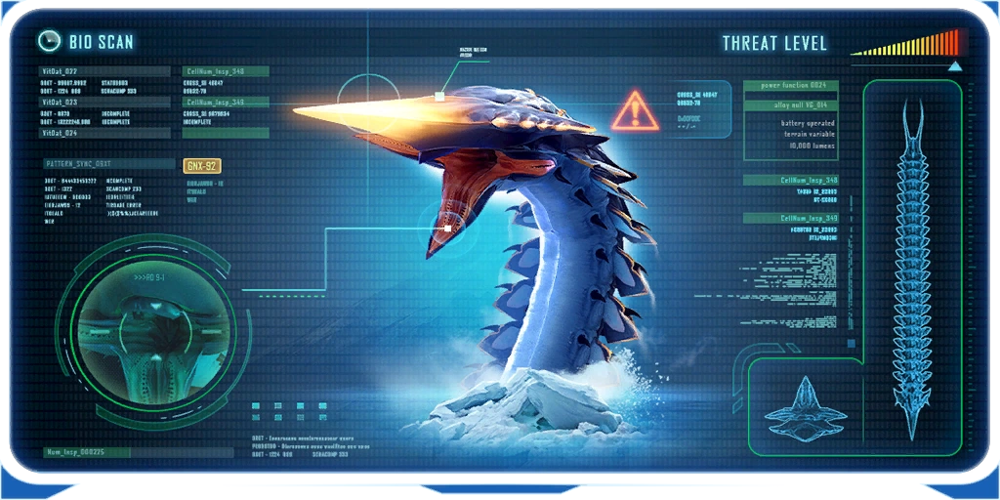
Ice Worm Leviathan:
The Ice Worm is an aggressive leviathan class fauna species that tunnels beneath the surface of the ice. They are ambush predators, drawn towards the vibrations produced by movement and certain machinery on the ice's surface. Ice Worms are exclusively subterranean creatures and do not swim.
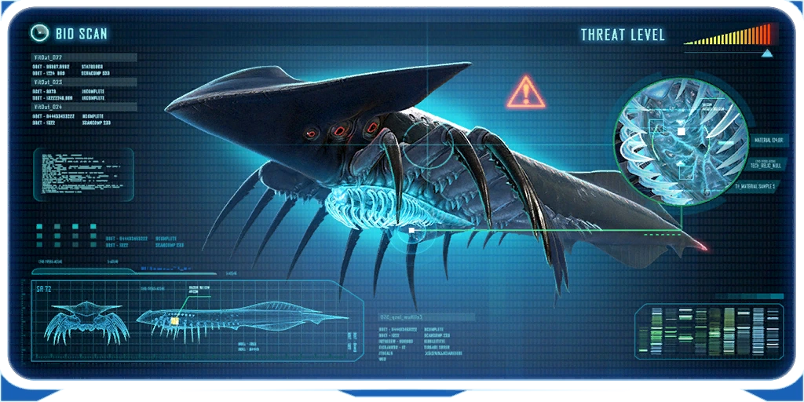
Shadow Leviathan:
The Shadow Leviathan has an elongated black body with smooth skin and twin rows of 37 small red spots running from behind the head to just before the tip of the tail. Below each row of red spots is a shorter row of eight circular gill pores that run down the side.
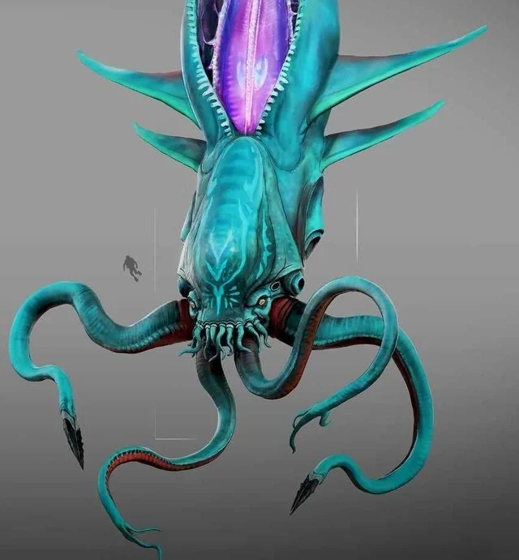
Collector Leviathan:
The Collector Leviathan is a hightly inteligent creature that will study you and be persistent. It learns your movements and memorizes patterns in order to be a consistent threat.
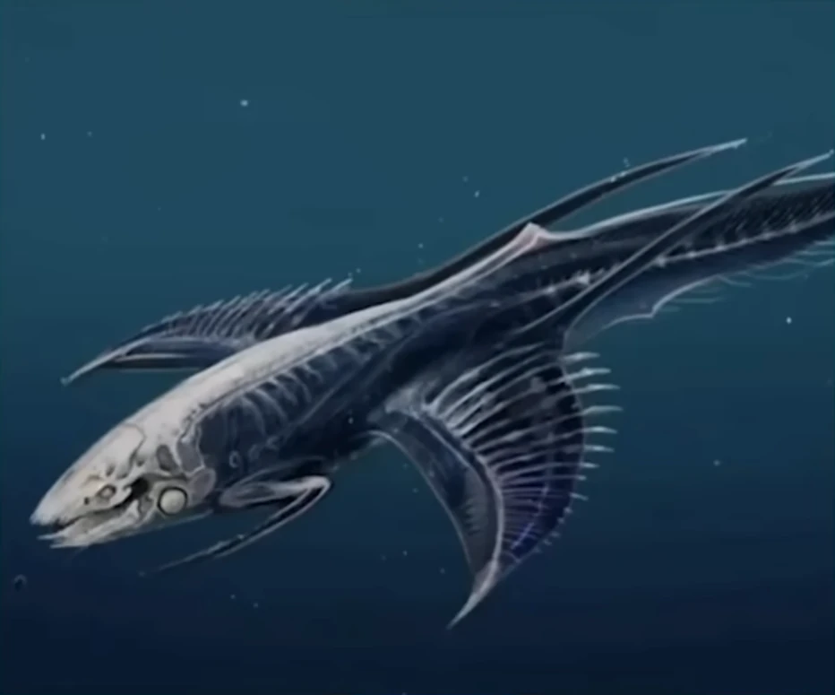
Shiver Leviathan:
Only found in the Void, the Shiver Leviathan hunts in groups of 4: 3 males, and one female. the small males eat small food, leaving the large food for the female.